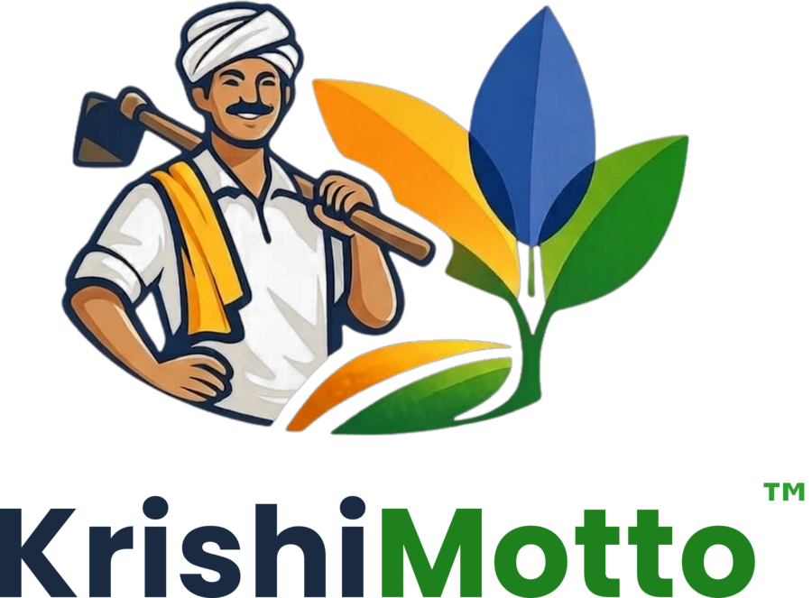
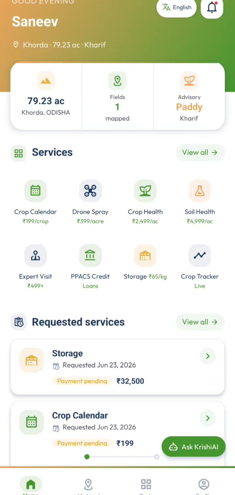
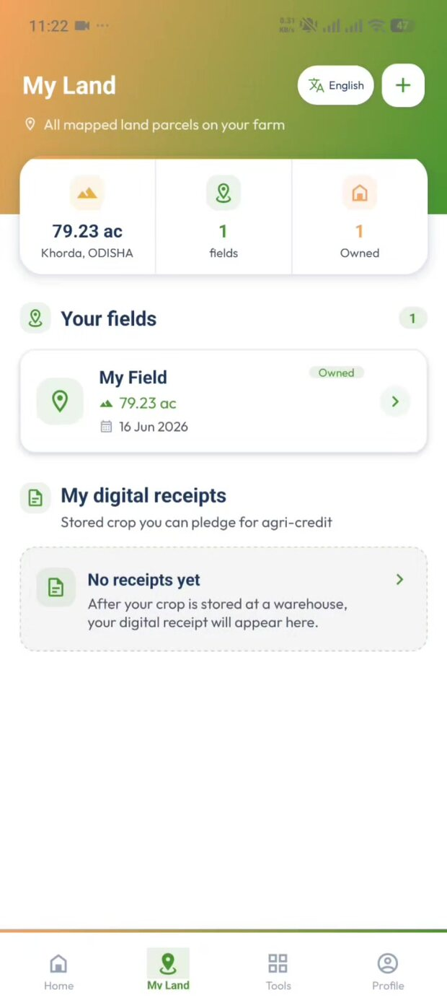
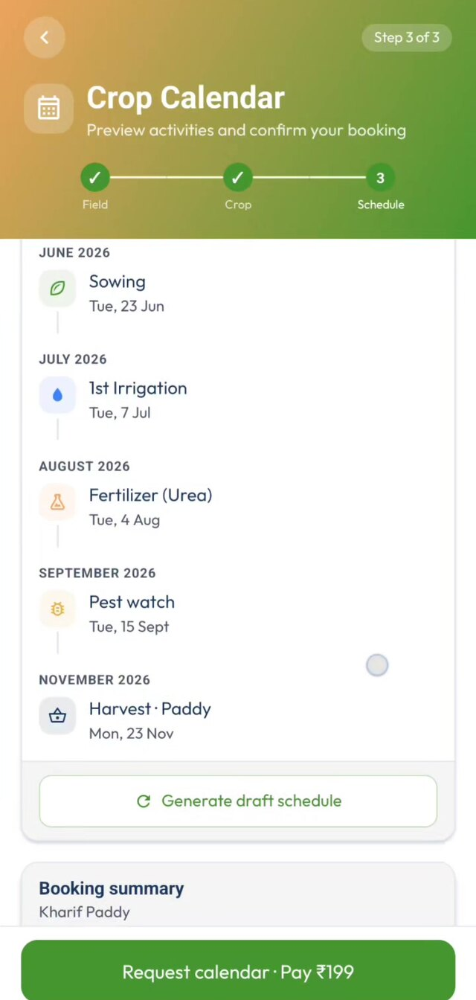
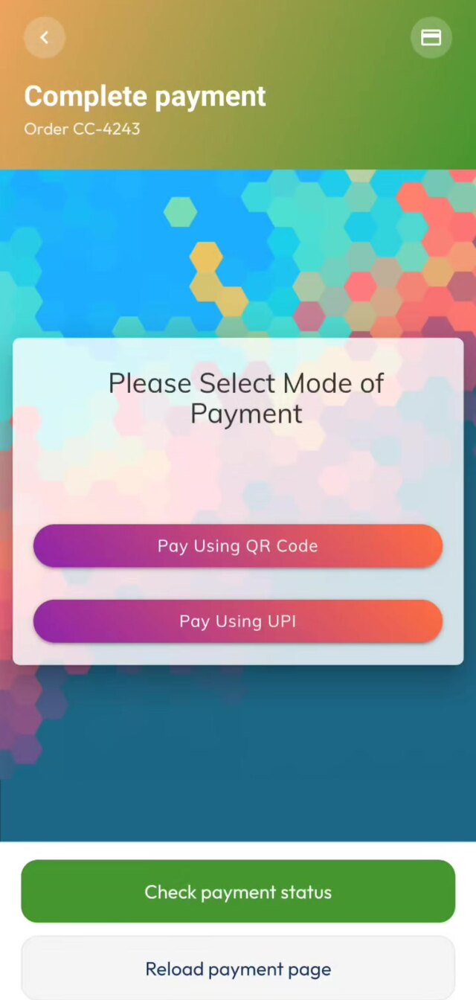
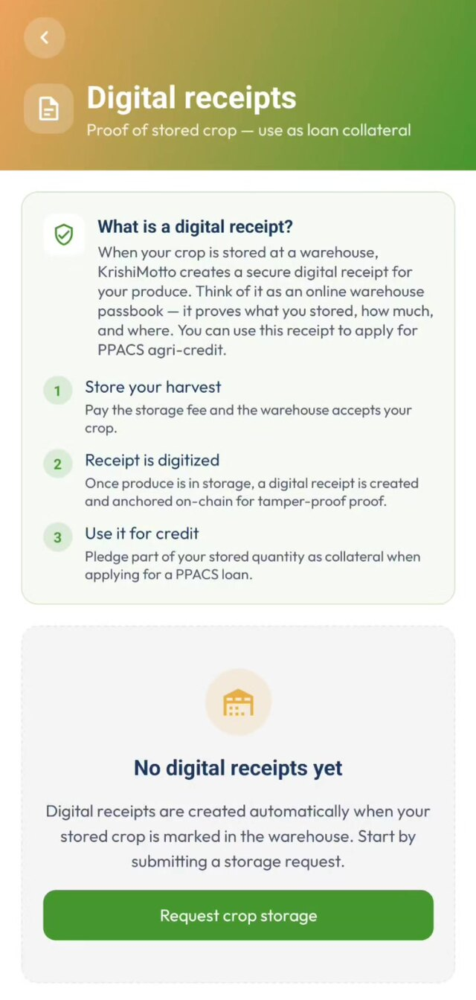
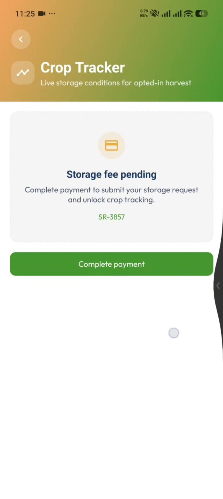
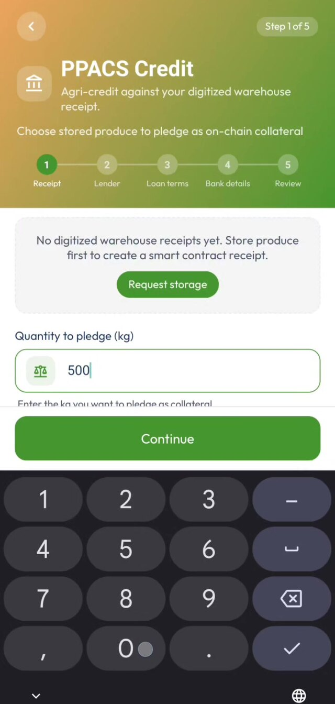
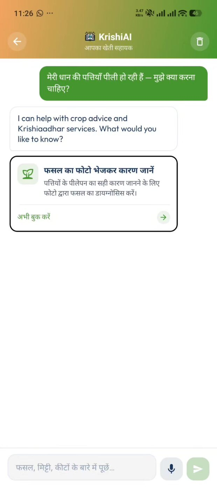

Empowered to Aspire
KrishiMotto is a one-stop app where a farmer maps their land, books science-backed farm services, and stores their harvest in a licensed warehouse — where it becomes a QR-anchored, on-chain warehouse receipt they can pledge for credit, proven in real time by IoT sensors.

The journey runs in four beats. Each one leaves behind a piece of verifiable proof, so that by the time a farmer asks for credit, the collateral has already told its own story.
Map land, then book AI-assisted, multilingual services — crop calendars, drone spray, multispectral & hyperspectral health scans, expert visits.
Harvest goes to a licensed warehouse. On intake, a QR trust-deed and an on-chain receipt digitise the exact stock that was weighed in.
A BME680 IoT device in the storage bay streams temperature, humidity, pressure and gas — continuously proving the collateral is real and intact.
The farmer pledges the receipt; a lender verifies KYC and the live collateral on-chain, then disburses or rejects — a decision, never an assumption.
Every actor gets a purpose-built surface. All four speak to one Krishiaadhar backend — Node.js, Express, MongoDB — over a role-scoped REST API, and share the same on-chain trust layer.
The farmer's window to everything: onboard, map land, book services, store crop and raise credit — in their own language.
The operator's console. It configures the app itself, verifies identities, and provisions the warehouses and lenders the network runs on.
Where produce becomes provable collateral. Staff weigh intake, mint the trust-deed QR and on-chain receipt, and watch the bay live.
A two-tier workspace. A lender admin manages loan agents, who verify KYC and collateral against the live receipt — then decide.
From onboarding to on-chain credit — real screens from the KrishiMotto Android app. Hover to pause.

Home dashboard
My land
Crop calendar
QR payment
Digital receipts
Crop tracker
PPACS credit
KrishiAIMultilingual by design — the entire UI switches language on the fly across Hindi, Odia, Telugu, Tamil and English.
A single farmer action ripples across all four surfaces, the payment rail, the IoT device and the blockchain. This is the journey the whole platform exists to enable.
Farmer requests storage and pays the per-kg fee by Instamoney QR.
Warehouse weighs the produce and prints a trust-deed QR onto the bags.
A digitised receipt (KAC-…) is anchored on the Sepolia ledger.
A BME680 sensor streams live conditions straight onto the receipt.
Farmer completes KYC and pledges the receipt as on-chain collateral.
A loan agent verifies KYC and collateral, then disburses or rejects.
Admin oversight throughout. The platform provisioned the warehouse and lender, and sees every booking, receipt, sensor reading, collateral pledge and disbursement — each carrying its own blockchain transaction hash for audit.
Client surfaces call a single role-scoped REST API. Behind it, the backend orchestrates persistence, payments, KYC, the blockchain relayer, IoT ingest and AI.
Gasless simulation on the Sepolia test-net today — the same relayer can point at a production EVM chain without changing app logic.
The home grid is rendered live from the admin's service catalog — titles, icons and service details all come from the backend, and every booking is field-aware.
An auto-drafted 153-day schedule of five field activities, ready for an expert to review.
Field-aware aerial spraying matched to your mapped area, with crop type and preferred date.
Multispectral crop-health mapping with an optional technician visit and sampling.
Hyperspectral soil scanning for nutrient insights and tailored fertiliser advice.
Book an agri-expert for diagnosis, advisory or inspection, with context captured up-front.
Pledge a stored-produce receipt as collateral and apply for cooperative credit.
Reserve space at a licensed warehouse; valuation payout follows intake verification.
Watch live storage conditions for opted-in harvests — verified and anchored.
Warehouse-receipt finance lives or dies on trust in the collateral. KrishiMotto layers three tamper-evident proofs, so a lender never takes the stock on faith.
A physical QR pasted onto the storage bags resolves to a public receipt page — binding the real sack to its digital twin.
The receipt, collateral pledge, disbursement and KYC are anchored on an EVM chain (Sepolia), each with a transaction hash.
A BME680 device streams temperature, humidity, pressure and gas over a webhook — continuously proving the stock exists and is intact.
…and a human decision gate. Before any money moves, the farmer must complete e-KYC, and a lender agent independently verifies identity, bank details and the live collateral. Approval writes an on-chain disbursement record; rejection closes the request. Credit is proven, then decided — never automatic.
One backend and one API power four surfaces, with the blockchain relayer, IoT ingest, KYC and payments as pluggable rails.
One app grows, stores and finances a farmer's harvest. One receipt — QR-anchored, on-chain and IoT-verified — turns that harvest into a tamper-evident, financeable asset. Four surfaces interoperate over one backend and one ledger.
krishiaadhar.gramtarang.org